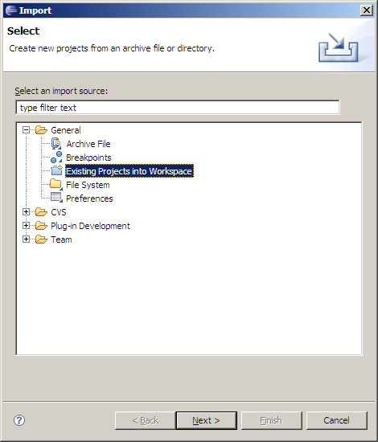

| Es necesario leer todo este documento para poder tener éxito en el proyecto. Recuerden que es necesario aprobar el proyecto independientemente de la teoría para aprobar la materia |
| conenido |
|---|
Definición
Primera etapa
Este semestre la primera etapa de proyecto de laboratorio consistirá en crear un interpretador o un compilador (por definir) para el lenguaje de programación Razor, usando el lenguaje de programación Java 5.0, y la herramienta de generación de compiladores ANTLR 2.7.6.
El lenguaje de programación Razor está definido aquí. El ambiente de programación recomendado está descrito en la página sobre Recursos, y los requerimientos y las normas que rigen el proyecto se encuentran en las páginas asociadas a esta.
Segunda Etapa
En la segunda etapa de proyecto hay que crear un pretty printer para el subconjunto de lenguaje de programación C a partir de los la definición léxica y sintáctica del lenguaje TinyC provista por ANTLR, según la definción de proyecto ya publicada.
Entregas
Contenido y fechas de entrega
Las entregas de proyecto, sus valores sobre la evaluación, y su fechas serán las siguientes:
| Entrega | Valor | Semana | Fecha |
|---|---|---|---|
| Analizadores Léxico y Sintáctico | 10% | 7 | 2006/11/19 |
| Arbol de Sintáxis Abstracta y Análisis Semántico | 10% | 11 | 2006/12/11 |
| Compilador o Intepretador (por decidir) | 20% | 15 | 2007/01/22 |
Forma de entrega
Las entregas se llevarán a cambio enviando un archivo en formato Zip al profesor de la sección correspondiente via correo electrónico. Solo se aceptarán las entregas que hayan sido recibidas por un servidor de correo electrónico mayor (google.com, yahoo.com, hotmail.com, cantv.net, telcel.net.ve, etc.) antes de la media noche del día de la entrega.
En el caso de que no pueda realizar la entrega por correo electrónico, la misma debe hacerse en diskette o CD y estar en el casillero del profesor antes de las 9:00 AM del siguiente día académico.
Primera Entrega
La primera entrega deberá consistir en un programa en Java que sea tal que al ejecutar:
java -classpath classes;lib/antlr-2.7.6.jar;... ve.edu.ucab.razor.Main un_programa.razor
produzca uno de los siguientes resultados:
- Si el programa Razor leido es léxica y sintácticamente correcto, el mensaje:
Programa válido!
- Si se detectó un error léxico, el mensaje:
nnn:error léxico: <mensaje>
donde nnn es el número de línea donde se detectó el error, y <mensaje> describe el error encontrado.
- Si se detectó un error sintáctico, el mensaje:
nnn:error sintáctico: <mensaje>
donde nnn es el número de línea donde se detectó el error, y <mensaje> describe el error encontrado.
Equipos
Equipos de proyectos
Los equipos serán de cuatro integrantes, y serán formados en un proceso de dos fases:
- Se formarán equipos de dos integrantes por libre elección de los estudiantes. El número de estudiantes es par, así que no debería haber obstáculos para culminar esta fase.
- Los equipos de dos serán unidos en equipos de cuatro integrantes por un proceso aleatorio.
La lista definitiva de inscritos no estará disponible sino hasta el 20 de octubre, por lo que cabe la posibilidad de que el número de inscritos varíe (sea menor) al actual. En caso de que varíe el número de inscritos se aplicarán estas normas:
- En ningún caso habrá un equipo de cinco personas.
- Se formará el número de equipos de tres personas que sea necesario de forma voluntaria, moviendo uno (solo uno) de los integrantes de un equipo a otro.
- De no lograrse la formación de equipos de tres o cuatro personas de forma voluntaria, el profesor decidirá cuales equipos tendrán tres integrantes.
Normas Generales
Cumplir con lo que especifican estas normas es OBLIGATORIO. Por favor revisen todos los puntos aquí discutidos antes de entregar sus proyectos. Las entregas que incumplan cualquiera de las normas aquí descritas obtendrán una nota de cero puntos.
Estructura de Directorios
| Las pruebas sobre la compilación y ejecución de los programas serán llevadas a cabo en forma automatizada usando un guión (script), por lo que los proyectos que no cumplan con la estructura de directorios REPROBARAN LA EVALUACION SOBRE LA EJECUCION. |
Cada entrega deberá contener la siguiente información. La estructura y los nombres de los directorios deben ser respetados al pie de la letra, sin cambiar singulares por plurales, ni minúsculas por mayúsculas:
- Un directorio llamado src contentivo de los archivos fuentes del programa.
- Un directorio src/edu/ucab/ti/razor y subdirectorios con los fuentes del programa.
- Un directorio parser contentivo de los archivos con las gramáticas.
- Un directorio parser/edu/ucab/ti/razor/parser con el código fuente generado por ANTLR.
- Un directorio llamado test contentivo del código fuente de las pruebas.
- Un directorio llamado lib contentivo de las librerías usadas por el programa.
- Un directorio doc contentivo de cualquier documentación relacionada con la entrega en formato HTML.
- Un directorip doc/api contentivo de la documentación de los fuentes generada usando el programa javadoc.
- Un directorio etc contentivo de cualquier otro archivo relacionado con la entrega.
- Nada más.
En Eclipse, la estructura del proyecto debe verse así:

| Puede obtener un archivo comprimido con una maqueta de proyecto con la estructura de directorios requerida aquí: maqueta_proyecto.zip. |
Documentación
Todas las entregas deberán estar acompañadas de por lo menos un archivo llamado index.html en el directorio doc que contenga:
- Membrete identificando la universidad, facultad, escuela, asignatura, y semestre.
- Fecha.
- Los nombres y apellidos de los integrantes del equipo.
- El nombre y propósito del proyecto.
- Comentarios respecto a las estrategias utilizadas en la ejecución del proyecto.
- Comentarios respecto a las dificultades encontradas y las limitaciones presentes en la implementación.
Archivos
- Todos los archivos, incluyendo los programas fuente deben estar identificados con:
- El nombre de la universidad
- El nombre de la materia
- El nombre del proyecto
- Los nombres de los integrantes del equipo.
- Todos los documentos explicativos deben estar en formato HTML. Los que se encuentren en otro formato (Word por ejemplo) no serán leídos ni considerados de manera alguna en la evaluación.
Programas
Antes de entregar, deben confirmar que sus programas compilan y corren. No se evaluará la ejecución de programas que no sean el producto exacto de los fuentes entregados.
Ambiente de Programación Recomendado
El ambiente de programación recomendado para este proyecto es el siguiente:
los estudiantes podrán usar otros ambientes de programación siempre y cuando el generador de compiladores sea ANTLR y el lenguaje de programación sea Java.
Instalación del Ambiente de Programación
- Instalar Java 5.0.
- Instalar Eclipse 3.2.1 según las instrucciones dadas en su página de download y configuración.
- Instalar el Plugin ANTLR para Eclipse según las instrucciones en su sitio Web.
- Descomprimir el archivo comprimod con la maqueta de estructura de directorios del proyecto en el disco duro.
- Ejecutar Eclipse y usar la opción
File/Import.../General/Existing Projects into Workspace
para importar el proyecto a Eclipse.
